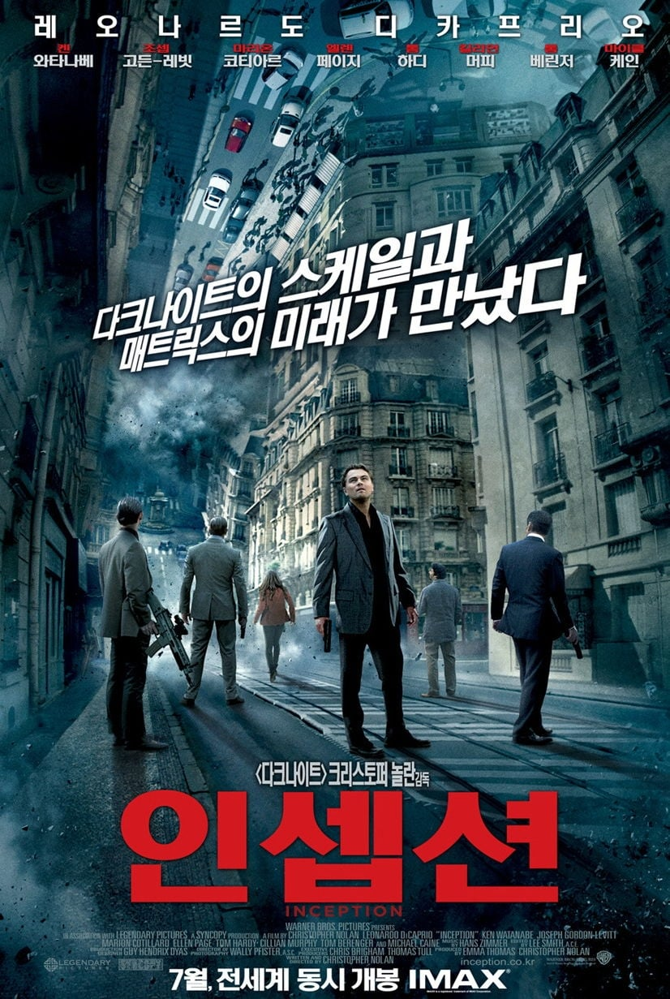
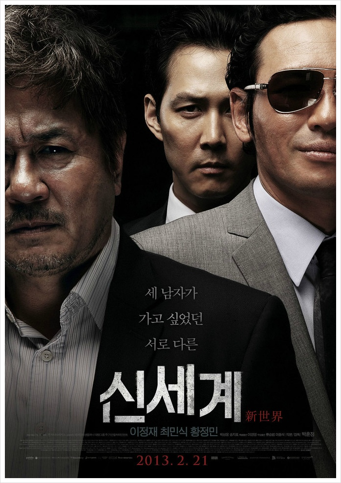

| 순위 |
제목 |
포스터 |
줄거리 |
바로가기 |
| 1 |
인셉션 |

|
타인의 꿈에 들어가 생각을 훔치는 특수 보안요원 코브. 그를 이용해 라이벌 기업의 정보를 빼내고자 하는 사이토는 코브에게 생각을 훔치는 것이 아닌, 생각을 심는 ‘인셉션’ 작전을 제안한다. 성공 조건으로 국제적인
수배자가 되어있는 코브의 신분을 바꿔주겠다는 거부할 수 없는 제안을 하고, 사랑하는 아이들에게 돌아가기 위해 그 제안을 받아들인다. 최강의 팀을 구성, 표적인 피셔에게 접근해서 ‘인셉션’ 작전을 실행하지만 예기치
못한 사건들과 마주하게 되는데… 꿈 VS 현실 시간, 규칙, 타이밍 모든 것이 완벽해야만 하는, 단 한 번도 성공한 적 없는 ‘인셉션’ 작전이 시작된다!
|
클릭
|
| 2 |
신세계 |

|
"너, 나하고 일 하나 같이 하자" 경찰청 수사 기획과 강과장(최민식)은 국내 최대 범죄 조직인 '골드문'이 기업형 조직으로 그 세력이 점점 확장되자 신입경찰 이자성(이정재)에게 잠입 수사를 명한다. 그리고 8년,
자성은 골드문의 2인자이자 그룹 실세인 정청(황정민)의 오른팔이 되기에 이른다. "우리 브라더는 그냥 딱, 이 형님만 믿으면 돼야!" 골드문 회장이 갑자기 사망하자, 강과장(최민식)은 후계자 결정에 직접 개입하는
'신세계' 작전을 설계한다. 피도 눈물도 없는 후계자 전쟁의 한 가운데, 정청(황정민)은 8년 전, 고향 여수에서 처음 만나 지금까지 친형제처럼 모든 순간을 함께 해 온 자성(이정재)에게 더욱 강한 신뢰를 보낸다.
"약속 했잖습니까... 이번엔 진짜 끝이라고" 한편, 작전의 성공만 생각하는 강과장(최민식)은 계속해서 자성(이정재)의 목을 조여만 간다. 시시각각 신분이 노출될 위기에 처한 자성(이정재)은 언제 자신을 배신할 지
모르는 경찰과, 형제의 의리로 대하는 정청(황정민) 사이에서 갈등하게 되는데…
|
클릭
|
| 3 |
인터스텔라 |
|
세계 각국의 정부와 경제가 완전히 붕괴된 미래가 다가온다. 지난 20세기에 범한 잘못이 전 세계적인 식량 부족을 불러왔고, NASA도 해체되었다. 이때 시공간에 불가사의한 틈이 열리고, 남은 자들에게는 이 곳을
탐험해 인류를 구해야 하는 임무가 지워진다. 사랑하는 가족들을 뒤로 한 채 인류라는 더 큰 가족을 위해, 그들은 이제 희망을 찾아 우주로 간다. 그리고 우린 답을 찾을 것이다. 늘 그랬듯이…
|
클릭
|
| 4 |
탑건 |

|
최고의 파일럿이자 전설적인 인물 매버릭(톰 크루즈)은 자신이 졸업한 훈련학교 교관으로 발탁된다. 그의 명성을 모르던 팀원들은 매버릭의 지시를 무시하지만 실전을 방불케 하는 상공 훈련에서 눈으로 봐도 믿기 힘든
전설적인 조종 실력에 모두가 압도된다. 매버릭의 지휘아래 견고한 팀워크를 쌓아가던 팀원들에게 국경을 뛰어넘는 위험한 임무가 주어지자 매버릭은 자신이 가르친 동료들과 함께 마지막이 될 지 모를 하늘 위 비행에
나서는데…
|
클릭
|
| 5 |
서울의 봄 |

|
1979년 12월 12일, 수도 서울 군사반란 발생 그날, 대한민국의 운명이 바뀌었다 대한민국을 뒤흔든 10월 26일 이후, 서울에 새로운 바람이 불어온 것도 잠시 12월 12일, 보안사령관 전두광이 반란을 일으키고
군 내 사조직을 총동원하여 최전선의 전방부대까지 서울로 불러들인다. 권력에 눈이 먼 전두광의 반란군과 이에 맞선 수도경비사령관 이태신을 비롯한 진압군 사이, 일촉즉발의 9시간이 흘러가는데… 목숨을 건 두 세력의
팽팽한 대립 오늘 밤, 대한민국 수도에서 가장 치열한 전쟁이 펼쳐진다!
|
클릭
|